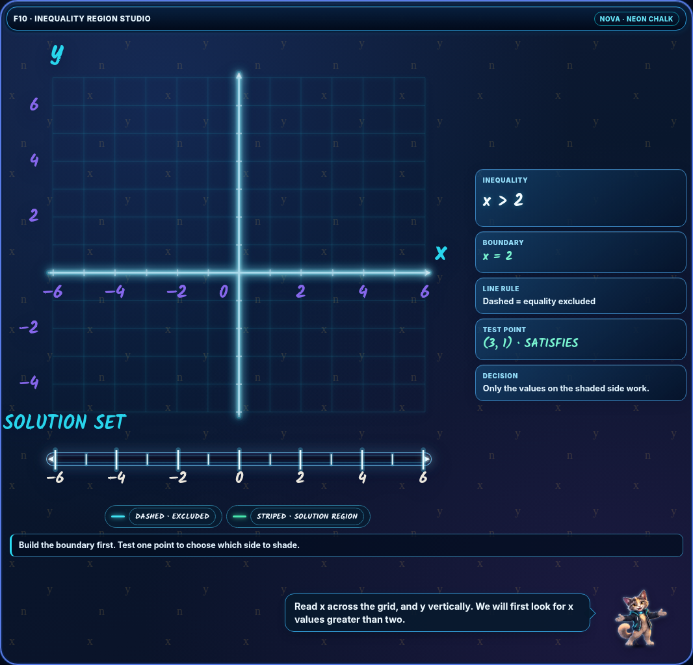
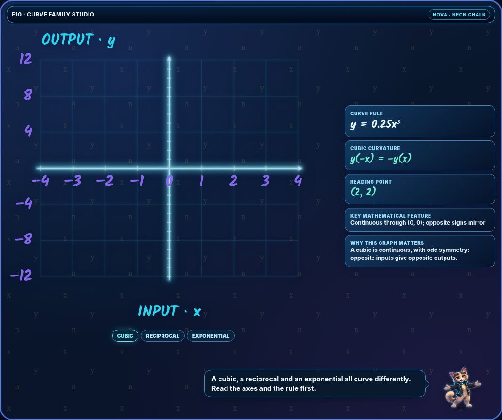
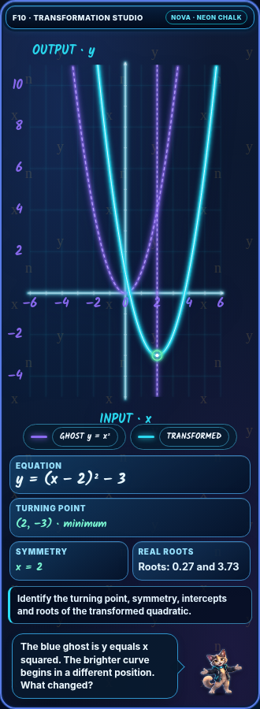

F10-01 through F10-15 · Single-Board Layout Repair
120/120 layout and browser mode checks passed.
Locked visual reference
The user-supplied F10-13-cubic-reciprocal-exponential.html is the exact visual source. It is shipped unchanged (identical file bytes) as F10-13 in this review ZIP.
The earlier rejected repair placed the mascot dock inside a separate bordered graph theatre, generating an unintended second frame/divider. That layout has been removed entirely.
Correct arrangement: one continuous outer .nova-stage with the patterned gradient background and the neon border. The graph/theatre has no separate enclosed border or background; the helper dock is a direct child of .nova-stage, below the mathematical content but over the same continuous stage background.
What changed
F10-01 uses its original board/scene directly inside the outer stage; no artificial inner theatre was inserted. F10-02 to F10-12 and F10-15 have only the shell/background CSS modified; their original mathematical teaching and existing helper calls are retained. F10-13 is the uploaded reference unchanged. F10-14 restores the originally missing speech/mascot helper and corrects its teaching-caption step binding, using the same shell treatment as the other visuals.
All 15 visuals use the chalk/neon typography, and retain the existing mathematical interactions and tutor captions. No GitHub updates.
Checks performed
15 visuals × two screen widths (380 and 1280) × four modes (Watch, Guided, Explore, Challenge). Verified no JS exceptions, exactly one mascot dock with a real caption, dock anchored directly beneath the stage, graph theatre without an extra frame, outer stage contains full dock, and no horizontal viewport overflow.
The checks focus on visual-shell structural and mode regressions; they are not a full mathematical solution audit.
Forward production rule · F10-16–20
Always implement the user's F10-13 reference: ONE outer scenic border with continuous patterned background. Keep graph and side cards within borderless inner content (if a theatre wrapper is needed); call NOVA.scene.helperStrip(stage, pose, caption) on the outer stage, not on the inner graph theatre. Never create a second bordered theatre or dock frame/row. No visible seam dividing the maths from the mascot. Verify at 380px and 1280px and in all four learning modes.
Visual evidence


